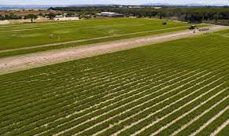
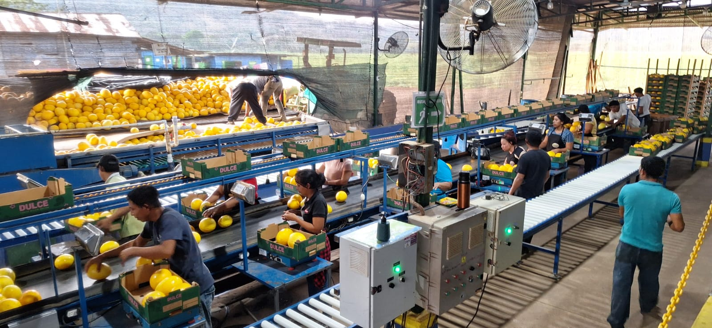
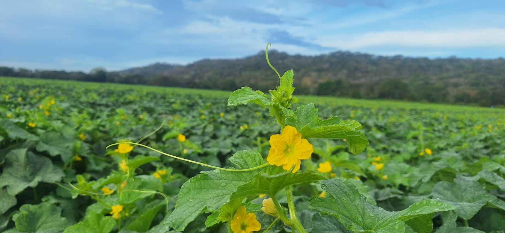
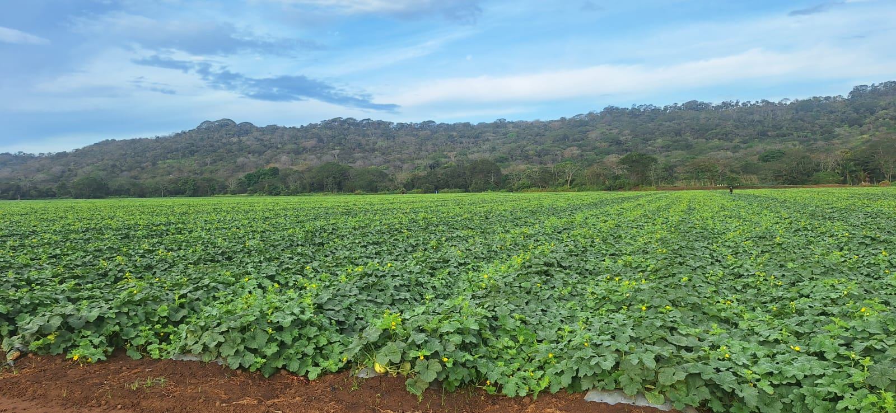
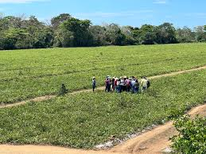
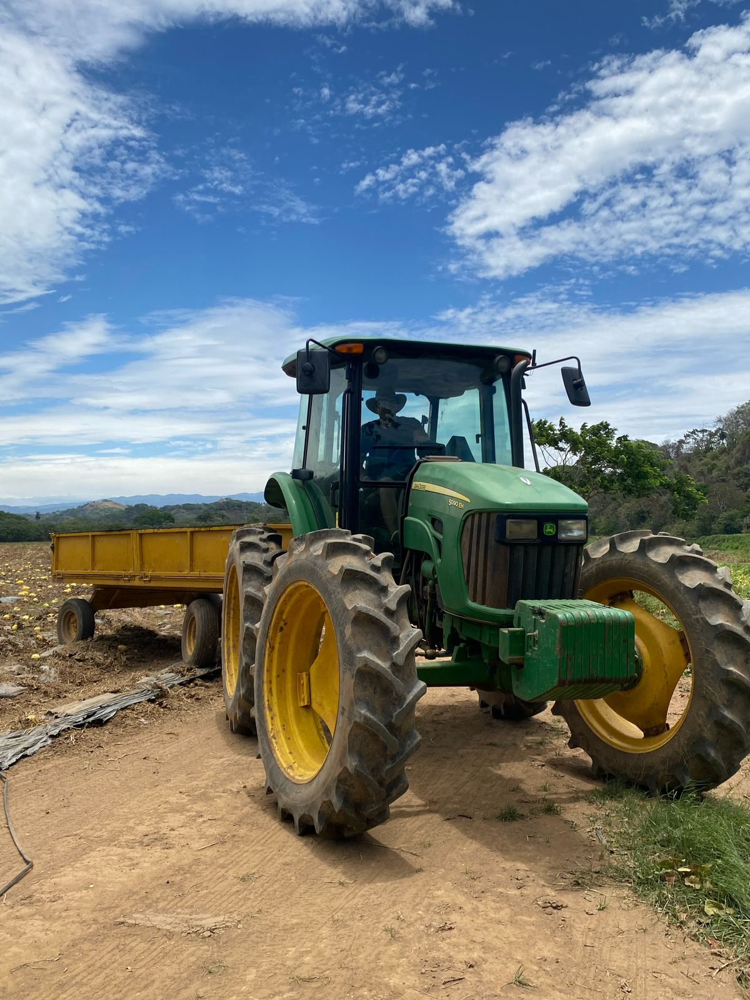
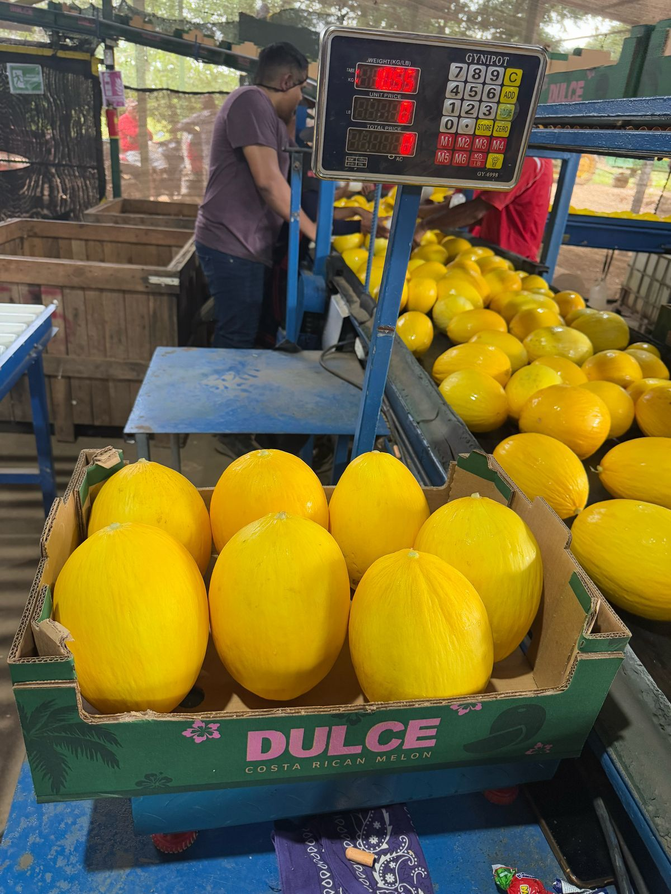

Vista aérea de nuestra plantación en Orotina.

Cosecha de frutas tropicales lista para exportación.

Hermosa flor de fruta tropicales.

Finca con hermosas plantas prontas a cosechar

Planta de sandia dulce y fresca.

en el proceso de la corta de la sandia para exportar

Nuestro equipo humano, el alma de la empresa.

Uso de maquinaria para cultivos especiales.

Control de calidad antes de empacar los productos.
Video general del proceso productivo en la empresa.
Video donde muestra la finca con la siembra.
Video muestra proceso de empaque de productos tropicales